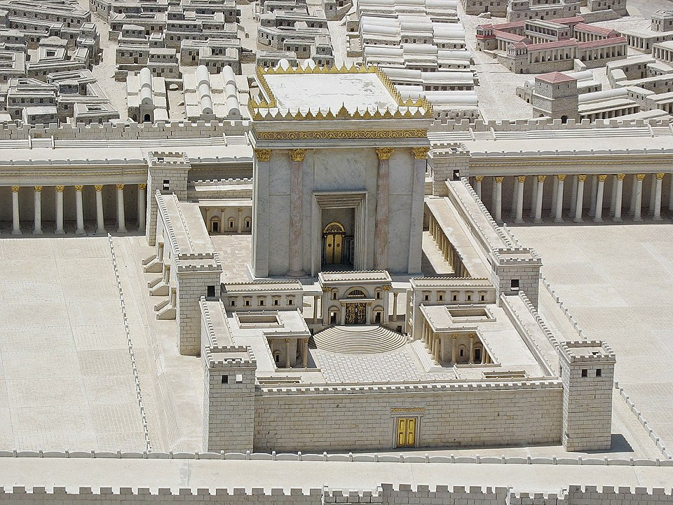
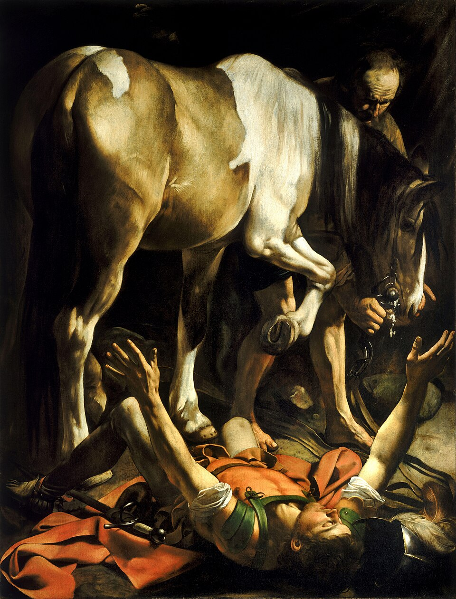
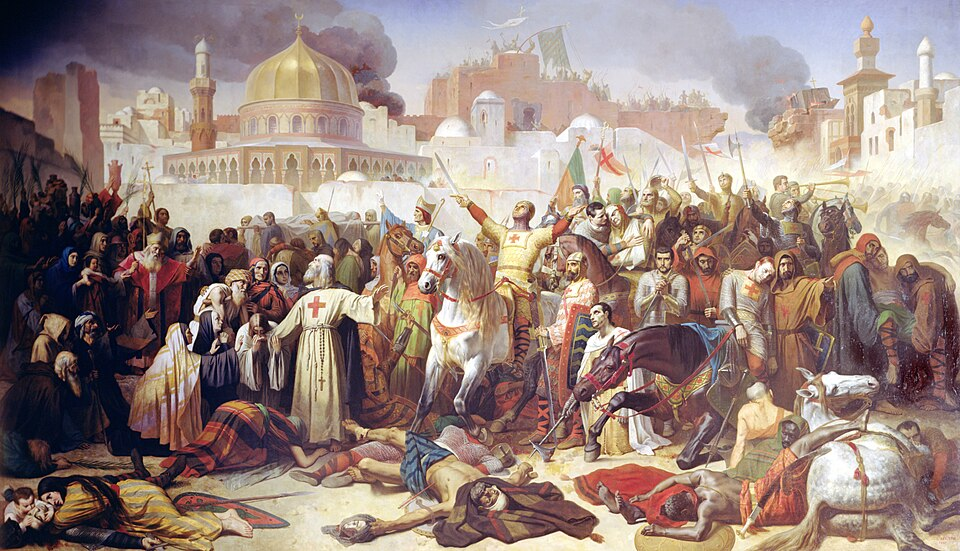
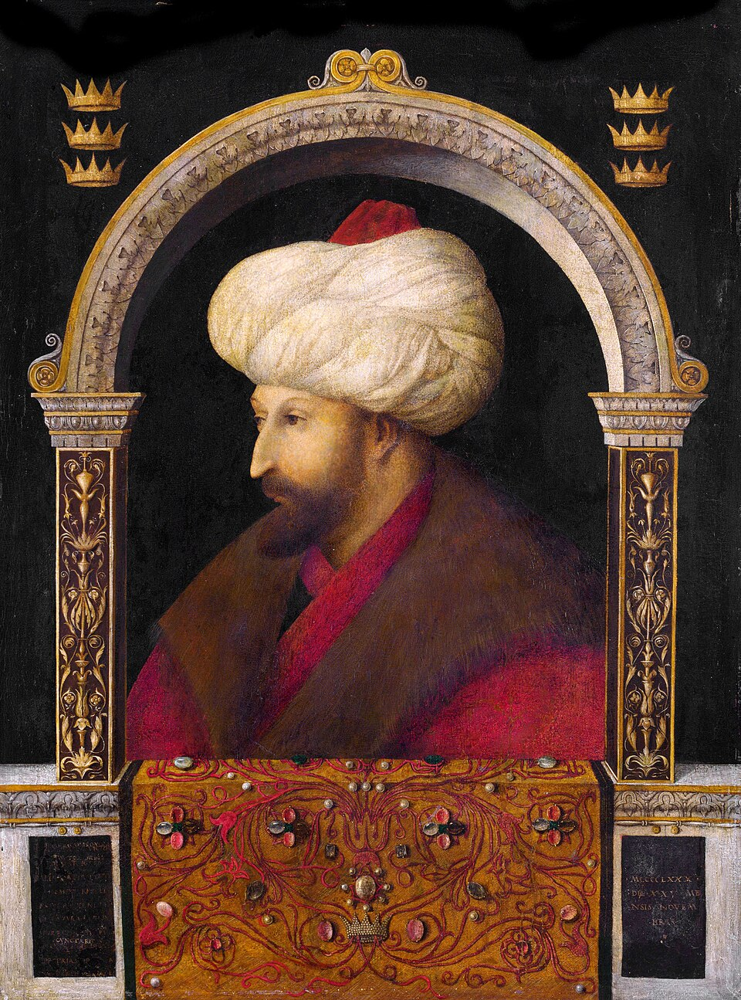

Judaism, Christianity & Islam
From Abraham to the present day — 4,000 years of shared origins, divergent paths, golden ages, holy wars, and the conflicts that shape our world today.
Timeline of Eras
Click any era to begin reading. Progress is tracked when you reach the quiz.
Ancient Origins
Abraham, Moses, First Temple
Classical Antiquity
Exile, Jesus, Second Temple
Early Church & Rabbis
Paul, Nicaea, Talmud
Rise of Islam
Muhammad, Caliphates, Karbala
Medieval World
Crusades, Saladin, Golden Age
Ottoman & Reformation
Constantinople, Luther, 1492
Enlightenment & Nationalism
Emancipation, Zionism
World Wars & Israel
Balfour, Holocaust, 1948
Modern Conflicts
Six-Day War, Oslo, Intifadas
21st Century
9/11, ISIS, Oct 7, Accords

Ancient Origins
Abraham's covenant, Hagar & Zamzam, Moses and the Exodus, the Ten Commandments, King David, Solomon's Temple, and the shared patriarchs of three faiths.
2000 - 600 BCE
Classical Antiquity
Babylonian Exile, the Second Temple, Maccabees and Hanukkah, Roman Judea, the life of Jesus, crucifixion, and how three faiths see him differently.
600 BCE - 100 CE
Early Church & Rabbis
Paul's missions, Temple destruction, Masada, Constantine, Council of Nicaea, the Talmud, and how Christianity became Rome's state religion.
100 - 600 CERise of Islam
Cave of Hira, the Hijra, Badr, Uhud, Khandaq, conquest of Mecca, the Rashidun Caliphs, Karbala, and the Sunni-Shia split.
600 - 750 CE
Medieval World
The Abbasid Golden Age, all the Crusades, Saladin, Reconquista, Maimonides and Ibn Rushd, Mongol invasion, and interfaith intellectual exchange.
750 - 1300 CE
Ottoman & Reformation
Fall of Constantinople, Spanish Inquisition, expulsion of 1492, Protestant Reformation, Suleiman the Magnificent, and the Thirty Years War.
1300 - 1700Enlightenment & Nationalism
Jewish Emancipation, Wahhabism, Napoleon's campaigns, the Dreyfus Affair, birth of Zionism, and the decline of the Ottoman Empire.
1700 - 1900
World Wars & Birth of Israel
Sykes-Picot, Balfour Declaration, the British Mandate, the Holocaust, UN Partition Plan, and the birth of Israel and the Nakba.
1900 - 1950
Modern Conflicts
Six-Day War, Yom Kippur War, Camp David, Iranian Revolution, Lebanon, both Intifadas, Oslo Accords, and the collapse of the peace process.
1950 - 200021st Century
9/11, War on Terror, Arab Spring, rise of ISIS, Abraham Accords, October 7, the Gaza War, and the search for resolution.
2000 - PresentHow to Use This Guide
Read the chapters in order for the full narrative, or jump to any era that interests you. Each chapter includes interactive timelines, multi-perspective comparison tables showing how each faith views shared events, historical maps and images, expandable deep-dives, and a quiz to test your understanding. Your progress is saved automatically.